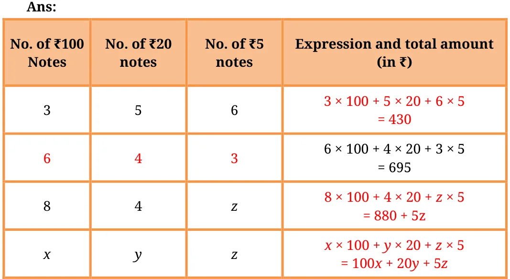
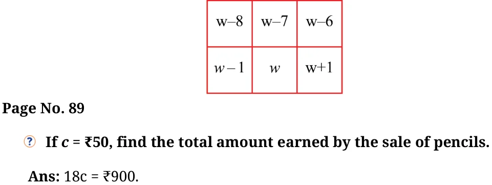

- What is the total amount Krithika has, if she has the following numbers of notes of ₹100, ₹20 and ₹5? Complete the following table:

Ans:
No. of ₹100 Notes No. of ₹20 notes No. of ₹5 notes Expression and total amount (in ₹) 3 5 6 \(3 \times 100 + 5 \times 20 + 6 \times 5 = 430\) 6 4 3 \(6 \times 100 + 4 \times 20 + 3 \times 5 = 695\) 8 4 z \(8 \times 100 + 4 \times 20 + z \times 5 = 880 + 5z\) x y z \(x \times 100 + y \times 20 + z \times 5 = 100x + 20y + 5z\) - Venkatalakshmi owns a flour mill. It takes 10 seconds for the roller mill to start running. Once it is running, each kg of grain takes 8 seconds to grind into powder. Which of the expressions below describes the time taken to complete grind ‘y’ kg of grain, assuming the machine is off initially?
(a) \(10 + 8 + y\) (b) \((10 + 8) \times y\) (c) \(10 \times 8 \times y\)
(d) \(10 + 8 \times y\) (e) \(10 \times y + 8\)
Ans: (d) \(10 + 8 \times y\)
- Write algebraic expressions using letters of your choice. (a) 5 more than a number (b) 4 less than a number (c) 2 less than 13 times a number (d) 13 less than 2 times a number
Ans: Let letter 'd' represent the number, then
- \(d + 5\)
- \(d - 4\)
- \(13 \times d - 2\)
- \(2 \times d - 13\)
Page No. 85
- Describe situations corresponding to the following algebraic expressions:
- \(8 \times x + 3 \times y\)
Ans: A shopkeeper sells a pen for ₹x and a notebook for ₹y. Abha buys 8 pens and 3 notebooks. What will be the total cost of her purchase?
- \(15 \times j - 2 \times k\)
Ans: A factory makes 15 chairs every day. If the factory works for j days, it will make \(15 \times j\) chairs. But 2 chairs break daily for k days. How many good chairs remain after j days and k days breakages?
Try for more situations
- \(8 \times x + 3 \times y\)
- In a calendar month, if any \(2 \times 3\) grid full of dates is chosen as shown in the picture, write expressions for the dates in the blank cells if the bottom middle cell has date 'w'.

Ans:
\(w - 8\) \(w - 7\) \(w - 6\) \(w - 1\) \(w\) \(w + 1\)